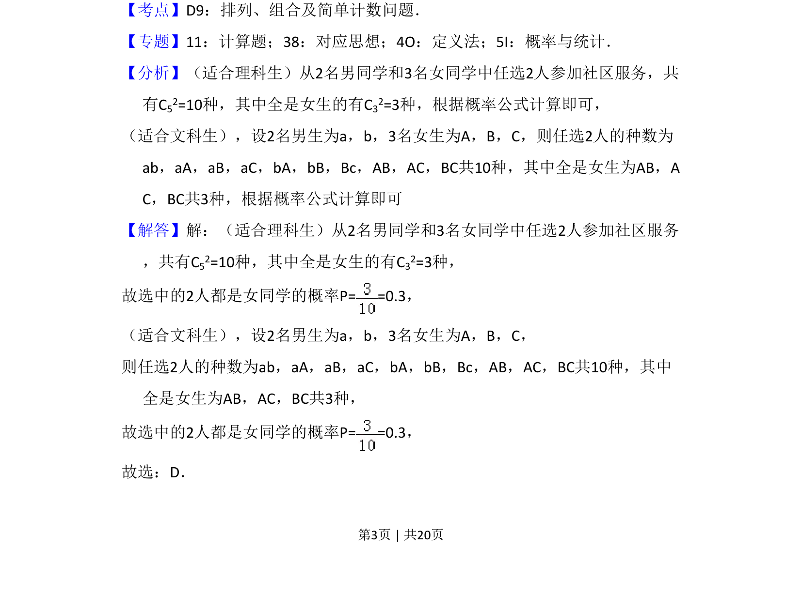
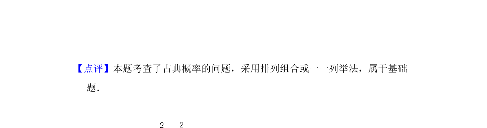

考点：古典概型 组合计数
从2名男生和3名女生中选2人，求均为女生的概率，考查古典概型计算。


📄 原 PDF 第 3 页：
素材/真题/吉林/2008-2024·（吉林）数学高考真题/2018年高考数学试卷（文）（新课标Ⅱ）（解析卷）.pdf
5．（5分）从2名男同学和3名女同学中任选2人参加社区服务，则选中的2人都 是女同学的概率为（ ） A．0.6 B．0.5 C．0.4 D．0.3
【考点】D9：排列、组合及简单计数问题．菁优网版权所有 【专题】11：计算题；38：对应思想；4O：定义法；5I：概率与统计． 【分析】（适合理科生）从2名男同学和3名女同学中任选2人参加社区服务，共 有C52=10种，其中全是女生的有C32=3种，根据概率公式计算即可， （适合文科生），设2名男生为a，b，3名女生为A，B，C，则任选2人的种数为 ab，aA，aB，aC，bA，bB，Bc，AB，AC，BC共10种，其中全是女生为AB，A C，BC共3种，根据概率公式计算即可 【解答】解：（适合理科生）从2名男同学和3名女同学中任选2人参加社区服务 ，共有C52=10种，其中全是女生的有C32=3种， 故选中的2人都是女同学的概率P= =0.3， （适合文科生），设2名男生为a，b，3名女生为A，B，C， 则任选2人的种数为ab，aA，aB，aC，bA，bB，Bc，AB，AC，BC共10种，其中 全是女生为AB，AC，BC共3种， 故选中的2人都是女同学的概率P= =0.3， 故选：D．